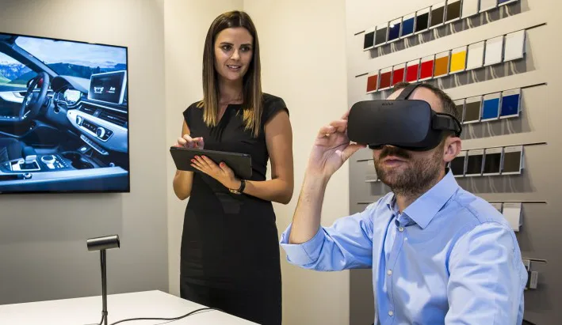

Do virtual ao real: como o AR/VR está remodelando o marketing
Você não precisa nem de um óculos especial para enxergar o avanço, cada vez mais rápido, das
tecnologias de
Realidade Aumentada (AR) e Realidade Virtual (VR) — e uma coisa é certa: ambas estão mudando drasticamente a
forma como as marcas interagem com seus consumidores.
Essas tecnologias imersivas, que antes pareciam exclusivas do mundo dos games ou da ficção científica, agora se
fazem cada vez mais presentes nos universos do marketing e do branding, abrindo o horizonte para experiências
que vão além do tradicional. Com elas, as marcas podem transportar seus clientes para mundos virtuais ou
aprimorar a realidade ao seu redor, criando conexões emocionais memoráveis que fazem com que o consumidor se
sinta parte da história da marca.
Por outro lado, já é possível perceber que a expectativa por experiências interativas e personalizadas nunca foi
tão alta, e a concorrência entre marcas para oferecer o “próximo nível” de engajamento está cada vez mais
aquecida. Com essas novas tecnologias, o branding evolui para uma fase mais dinâmica e sensorial, criando
oportunidades incríveis para as marcas inovarem e se diferenciarem — e ninguém pode ficar de fora.
É para isso que estamos aqui: nos parágrafos abaixo, vamos explorar mais a fundo como o AR/VR está sendo
utilizado no marketing para criar experiências únicas, examinar os benefícios e os desafios dessas tecnologias
e, acima de tudo, refletir sobre as tendências que moldarão o futuro do branding no mundo imersivo e digital.
Vamos lá?

O que são AR e VR, mesmo?
A Realidade Virtual (RV) é um ambiente — gerado por meio de um computador — com cenas e objetos que
parecem reais, fazendo com que os usuários se sintam imersos nessa realidade. Esse ambiente é percebido através
de um óculos ou capacete de Realidade Virtual. A RV nos permite mergulhar em videogames como se fôssemos os
próprios personagens, aprender a fazer cirurgias cardíacas ou aprender a melhorar a qualidade de um treinamento
esportivo para maximizar o desempenho.
Embora isso possa parecer extremamente futurista, essa tecnologia não é tão recente como se pensa. Muitos
consideram que um dos primeiros dispositivos de Realidade Virtual foi a Sensorama, uma máquina com assento
embutido que reproduzia filmes em 3D, exalava cheiros e gerava vibrações para tornar a experiência o mais real
possível. A invenção remonta meados dos anos 50. A partir daí, nos anos seguintes, o desenvolvimento tecnológico
e de software garantiu evoluções significativas, tanto em dispositivos quanto no design de interfaces.